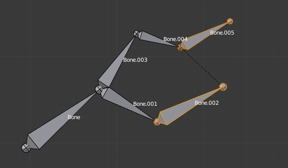

Parenting¶
Reference
Ctrl-P, Alt-PYou can edit the relationships between bones (and hence create/modify the chains of bones) both from the 3D Views and the Properties editor. Whatever method you prefer, it’s always a matter of deciding, for each bone, if it has to be parented to another one, and if so, if it should be connected to it.
To parent and/or connect bones, you can:
In a 3D View, select the bone and then its future parent, and press
Ctrl-P(or ). In the small Make Parent menu that pops up, choose Connected if you want the child to be connected to its parent, else click on Keep Offset. If you have selected more than two bones, they will all be parented to the last selected one. If you only select one already-parented bone, or all selected bones are already parented to the last selected one, your only choice is to connect them, if not already done. If you select only one non-parented bone, you will get the Need selected bone(s) error message...注解
With this method, the newly-children bones will not be scaled nor rotated – they will just be translated if you chose to connect them to their parent’s tip.
In the Properties editor, Bones tab, for each selected bone, you can select its parent in the Parent data-ID to the upper right corner of its Relations panel. If you want them to be connected, just enable the checkbox to the right of the list.
注解
With this method, the tip of the child bone will never be translated – so if Connected is enabled, the child bone will be completely transformed by the operation.

The starting armature, with Bone.005 parented and connected to Bone.004. |

Bone.005 re-parented to Bone.002, but not connected to it
(same result, using either |

Bone.005 parented and connected to Bone.002, using |

Bone.005 parented and connected to Bone.002.
Using the Parent data-ID of Bone.005 Relations panel.
|
{kind=link}
To disconnect and/or free bones, you can:
- In a 3D View, select the desired bones, and press
Alt-P(or ). In the small Clear Parent menu that pops up, choose Clear Parent to completely free all selected bones, or Disconnect Bone if you just want to break their connections. - In the Properties editor, Bones tab, for each selected bone, you can select no parent in the Parent data-ID of its Relations panel, to free it completely. If you just want to disconnect it from its parent, disable the Connected checkbox.
Note that relationships with non-selected children are never modified.